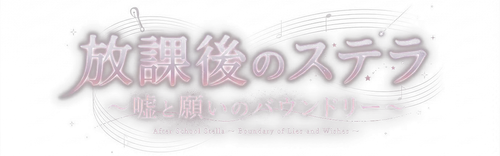

Story
未能說出口的事，在星光下重新浮現輪廓。
主人公桐島勇的放學後，正一點點失去色彩。然而，天臺上交換的約定、活動室里殘留的沉默、等待黎明的側臉，讓停滯的時間再次流動。
從共同路線出發，通過選擇走進櫻咲櫻、花園琴葉和月夜野真晝各自的故事。觸碰她們的“謊言”與“願望”，越過彼此之間的邊界。


放學後的星光Opening Movie
伴著主題曲，走進三個人的放學後。
含主題曲的片頭／約1分43秒
Story
主人公桐島勇的放學後，正一點點失去色彩。然而，天臺上交換的約定、活動室里殘留的沉默、等待黎明的側臉，讓停滯的時間再次流動。
從共同路線出發，通過選擇走進櫻咲櫻、花園琴葉和月夜野真晝各自的故事。觸碰她們的“謊言”與“願望”，越過彼此之間的邊界。
World
Characters
Badminton Club
總是開朗，比誰都先露出笑容的少女。那份笑容既是堅強，也是遮住不曾示人脆弱的鎧甲。
“新學期，畢竟只有一次嘛。”
VOICE / Suzu

Quiet Melody
喜歡安靜，真心更多流露在沉默而非言語中的少女。越走近，那些緊閉的聲音，就越一點點松開。
“水面，有點像音樂呢。”
VOICE / Leira

Dawn Notebook
不離相機和筆記本的青梅竹馬。寫著“今天活著真好的事”，等待黎明。
“只是，想記住而已。”
VOICE / Yuki
Gallery


Play
共同路線中的選擇，將帶你走入三位女主角各自的路線。
在重要選擇前存檔，看看另一種未來。
讀完以后，可以回顧印象深刻的事件圖片。
主人公之外的所有臺詞均有日語、英語、普通話配音。和背景音樂、音效一起，帶來放學後的氣息。
無需安裝。從公開頁面即可免費玩到最後。
適合不同年齡讀者的全年齡瀏覽器視覺小說。
System Requirements
網頁版可直接在瀏覽器游玩。電腦建議使用較大屏幕，手機建議添加到主屏幕后啟動。
Updates
Official X
#放課後のステラ 官方動態
這里展示制作消息、更新資訊和放學後的余韻。官方賬號將使用作品標簽，逐漸分享這個故事的氣息。
可在X搜索頁查看 #放課後のステラ 的最新動態。